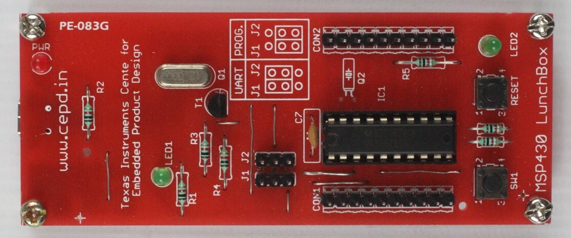

Welcome to MSP430 LunchBox’s documentation!¶
MSP430 LunchBox was developed at TI CEPD, Netaji Subhash University of Technology, New Delhi. More details on design and development of this board can be found at this blog, http://dvgadre.blogspot.com/2017/01/make-yourself-msp430-lunchbox-for-1.html.
MSP430 LunchBox is being manufactured and marketed by SincGrid LLP. To purchase, please visit Sincgrid Store, LunchBox.
For NPTEL course repository around MSP430 Lunchbox, please visit https://github.com/ticepd/EmbSysDesign_NPTEL_Course.
Table of Contents